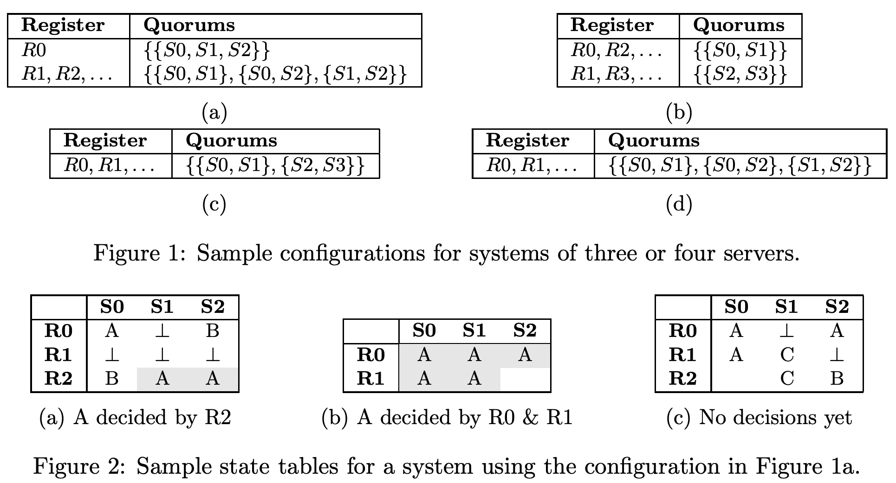

广义分布式共识
分布式共识是在面对故障和异步性时达成共识的能力，它是用不可靠组件来构建可靠分布式系统的原语。Paxos 算法是分布式共识的同义词，尽管在实践中表现不佳，并且很难理解。在本文中，我们重新审视分布式共识的基础。我们得出了一个共识的抽象解决方案，它利用不可变状态来直观推理安全性。我们证明了我们的抽象解决方案优于 Paxos 以及 Fast Paxos 和 Flexible Paxos 算法。该分析的令人惊讶的结果是对这些广泛研究的算法的法定人数要求的显著削弱。
注释：重点内容，法定人数的要求的削弱。
1. 简介
我们依赖于分布式系统，但构成这些系统的计算机和网络是异步且不可靠的。 长期存在的分布式共识问题正式化了如何在这种系统中可靠地达成一致。 解决后，我们能够从不可靠的组件构建强大一致的分布式系统[13,21,4,17]。 Lamport的Paxos算法[14]被广泛部署在生产中以解决分布式共识[5,6]，并且对 Paxos 的经历已经有了广泛的研究以改进其性能和我们的理解，但是，尽管很受欢迎，但两个问题仍然存在。
注释：Paxos 性能差，不易理解导致了大量的研究，但问题仍然存在。
Paxos在实践中表现不佳，因为它使用了多数派，意味着每个决策都需要在许多参与者之间往返，从而给每个参与者和连接他们的网络带来巨大负担。因此，系统通常在实践中仅限于三个或五个参与者。此外，Paxos通常以Multi-Paxos的形式实现，它将一个参与者设置为主服务器，这样会引入性能瓶颈并增加延迟，因为所有决策都是通过主服务器转发的。鉴于这些限制，许多生产系统通常选择牺牲强大的一致性来支持性能和高可用性[7,3,18]。虽然在实际的分布式系统中，妥协是不可避免的[10]，但Paxos在可能的权衡取舍中只提供了一点。作为回应，本文旨在通过提供通用解决方案来提高性能，使工程师能够根据其特定应用程序和部署环境的需求灵活地选择自己的权衡。
注释：通用解决方案，灵活选择权衡一致性和可用性。
Paxos是众所周知难以理解，导致了大量的后续工作，用更简单的术语解释算法[20,15,19,23]并填补原始描述中的空白，是构建实际系统所必需的[6,2]。近年来，不变性在分布式系统中得到越来越广泛的应用，以克服复杂性[11]。诸如仅附加日志的存储[1,8]和CRDT[22]等示例激励我们将不变性应用于共识问题。
注释：不变性，仅附加日志存储，CRDT，共识问题。
本文重新审视了分布式共识问题，旨在提高性能和让人更容易理解。我们按如下方式进行。一旦我们定义了共识问题（§2），就提出了一种共识的通用解决方案，它只使用不可变状态来实现关于正确性的更直观的推理（§3）。我们随后证明了Paxos和Fast Paxos [16]都是我们广义一致性算法的实例，因此表明两种算法在其方法中都是保守的，特别是在他们的仲裁交叉和仲裁协议规则中（§4＆§5）。最后，我们通过概括我们的广义一致性算法的三个不同实例来说明抽象的力量，这些实例提供了与Paxos（§6）相比的可选择的性能权衡。
注释：通用共识，Paxos 是其实例。
2. 问题定义
经典的共识考虑了如何决定分布式系统中的单个值。这个看似简单的问题由于对底层系统做出的弱假设而变得很不平凡：我们只假设算法被正确执行（即非拜占庭模型）。我们不假设参与者是可靠的或是同步的。参与者可以以任意速度运行，并且可以任意延迟消息。
注释：参与者不可靠，网络是异步的，非拜占庭将军问题。
我们考虑由两种类型的参与者组成的系统：存储值的服务器和读/写值的客户端。客户端将要写入的值作为输入，并将由系统决定的值作为输出产生。消息只能在客户端和服务器之间交换，我们假设参与者，服务器和客户端集是固定的并且被客户端知道。
如果算法满足以下三个要求，则算法会达成共识：
- 非平凡。所有输出值必须是客户端的输入值。
- 达成一致。输出值的所有客户端必须输出相同的值。
- 进度。在足够长的周期内，如果系统可靠且同步，则所有客户端最终必须输出值。
进度要求排除了可能达到死锁的算法。由于终止在可能发生故障的异步系统中无法保证[9]，算法只需要假设活跃的情况下保证终止。 如果我们只有一台服务器，那么解决方案很简单。服务器有一个持久的一次写入寄存器R0，用于存储决定的值。客户端使用其输入值向服务器发送请求。如果R0未写入，则接收的值将写入R0并返回给客户端。如果已写入R0，则读取R0中的值并将其返回给客户端。然后客户端输出返回的值。此算法可以达成共识，但是要求服务器是可用的，使得客户端可以终止。要克服此限制，需要部署多个服务器，因此我们现在考虑如何一般化为多个服务器。
3. 通用方法
考虑一个服务器的集合，\{S0, S1,..., Sn\}，其中每个服务器都有一系列无限次可以写入的持久寄存器\{R0,R1,...\}。客户端在服务器上读写寄存器，并且在任何时候，每个寄存器都处于以下三种状态之一：
- 未写入：所有寄存器的初始状态；或者
- 包含一个值：例如 A、B、C；或者
- 包含 nil：一个表示为⊥的特殊值。

一个多数派 Q 是服务器的（非空）子集，因此如果所有服务器在同一寄存器中具有相同（非nil）值 v，则认为 v 是可以确定的。寄存器组 i 是由来自每个服务器的寄存器 Ri 组成的集合。每个寄存器组 i 配置有一组仲裁，\mathcal{Q}i，图1给出了四个示例配置。所有寄存器的状态可以表示在一个表中，称为状态表，其中每列代表一个服务器的状态，每行代表一个寄存器集。 通过将配置与状态表组合，我们可以确定是否已达到某种决定，如图2所示。
3.1 正确性
图 3 描述了一个一般化解决方案，通过给出四条规则来管理客户端如何与寄存器交互，以确保满足共识非平凡和一致性的要求。
规则 1（多数派一致）保证客户端仅仅输出被确定的值。规则 2（新值）保证仅客户端输入的值可以被写入到寄存器，因此客户端输出值只能由客户端决定和输出。规则 3 和 4 保证不会有两个多数派可以决定不同的值。规则3（当前决定）确保寄存器集所做的所有决策都是相同的值，而规则4（先前决定）确保不同寄存器集所做的所有决策都是相同的值。
- 规则 1：多数派一致。一个客户端仅输出一个(非nil)值 v，如果已经从多数服务器的相同寄存器组上读取到 v。
- 规则 2：新值。
- 规则 3：当前决定。
- 规则 4：先前决定。